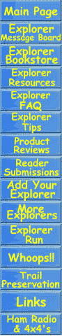

| Editor
Rick Horwitz 
|

1993 Ford Explorer Buildup by Rick Horwitz
In 1993 I was looking for a vehicle to replace my '90 Mazda B2600, 4x4. I needed something that would allow me to carry all of my photo gear and also my clients into the backcountry of Arizona. I decided that the 1993 Ford Explorer XL fit my needs and would make for an extremely trailworthy vehicle once a few well planned modifications had been performed. The criteria I had was to keep it simple so I started with a base 4-door Explorer XL equipped with manual locking hubs, manual transfer case and a 5-speed manual transmission. After purchasing my Explorer I drove it completely stock for 3000 miles making sure everything worked as it should. I turned the broken in Explorer over to Torrey Porter, at FLY-N-HI Offroad Centers in Phoenix, Arizona to install an ARB Airlocker in the rear and a limited slip differential in front. 4:56 gears were also added at this point. Also installed at this time was a Trailmaster 4" suspension lift with arched rear springs (instead of blocks). The first time I took the Explorer out
to the desert to see how it worked I had problems. I took the truck on
a trail that I was very familiar with and took some moguls fairly quickly.
After running the moguls and putting the suspension through
An additional ARB air compressor supplies
a 6 gallon air tank mounted between the rear frame rails. FST fabricated
a tire carrier /rear bumper which holds my 33x15" spare tire. The front
bumper/winch mount is by Smittybuilt and has been reinforced to handle
the 9000 lb. Ramsey winch. FST also fabricated a transmission mount that
has much less flex than stock but still has give to it. The stock mount
allowed the front u-joint to smack the floorboard in sand under full
throttle and also while climbing steep loose hills.
Many people complain about the lack of power with the 4.0 liter Ford but I think it’s well matched to the 33x12.50 BFG MT’s and the 4:56 gears. The engine doesn’t miss a beat and short of towing I don’t see a problem with the stock motor. I did add a Hypertech Power Module which extended the rpm range of the engine, improved the overall driveability and eliminated the spark knock I was getting during the 100+ degree days in Phoenix. A K&N airfilter and a custom "catback" exhaust from Pro Dyno in Tempe, Arizona helps the engine breath freely. The only Ford related problem I have had with the truck is the transmission. Like many others I have had problems with the Mazda built 5 speed. The transmission never gave out, but became increasingly difficult to shift. Ford rebuilt the tranny once at 36,000 and again at 59,000. At about 90,000 miles I installed a factory new 5speed. I kept the original tranny so I could rebuild it for future use. Many people have had their Mazda 5speed manual transmission fail when the rubber plugs sealing the shift rails dry out and allow all the fluid to escape suddenly. The rubber plugs can be replaced with metal plugs of the correct size. Synthentic transmission fluids seem to extend the life of this transmission as well. I have had good luck with Redline. Most importantly stay with the Mercon/Dexron III type fluids and DO NOT use standard gear oil. At about 85,000 miles I noticed cracks occuring in the floorboards where the floor meets the firewall. The Explorer has an extremely flexible frame with a large inflexible body. The Ranger, which uses the same chassis design as the Explorer has the benefit of a seperate cab and bed assembly. This allows free movement of the frame without overly stressing the body. The floor is not the only thing that has cracked from the constant flexing. I have also cracked two AC evaporators. The aluminium tube which enters the housing cracked in half two years in a row. The rubber hose which extends from the compressor to the accumulator is not flexible enough to handle the twisting of the engine and frame. I am looking into having a longer custom hose made which would allow for more flex and hopefully prevent the problem from happening again. My plans for the future include a new front bumper with integrated winch mount/skid plate and a beefy Ford 9" rear axle. If I have anymore problems with my Dana 35 IFS, a Dana 44 IFS may be installed. I have also been thinking about adding a supercharger kit, but I haven't made a decision about which brand would be best. I also would like to add a transfer case or a transmission with lower gearing if they ever become available. Living near Phoenix, we usually get to take the truck out on the trails at least once a week for some serious wheeling. It's only a short drive from my house to some great trails in the Bradshaw Mountains and other excellant trails north of Phoenix. |


{kind=link}